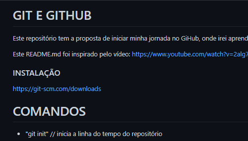

Projetos pessoais
Estes são os projetos que fiz para uso pessoal sem fins lucrativos ou apenas para fins de estudo
-
Barbearia Alura
Este foi meu primeiro projeto front-end finalizado, utilizando apenas HTML e CSS.
Consiste de uma página web para uma barbearia fictícia, que foi desenvolvida ao longo do curso de front-end da Alura.

-
Hello Git e GitHub
Este foi meu primeiro contato com a ferramenta Git e com o GitHub.
Consiste de um arquivo HTML sem conteúdo e um README com os comandos Git que aprendi na ocasião.
